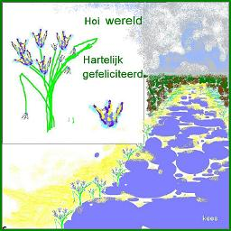

Moz. github difficult,
Click Picture Cycles (through a few more).

1 & 2 Solved SOFAR, 3 a bit.
3?: When is "alternative text" (of picture) showed instead of meant picture itself.
At Mozilla there is a global community of
- technologists, thinkers, builders, etc.
- ...... and a LOT of documentation etc.
working together to keep the Internet alive and accessible.
Read the Mozilla Manifesto to learn even more about the values and principles that guide the pursuit of our mission.